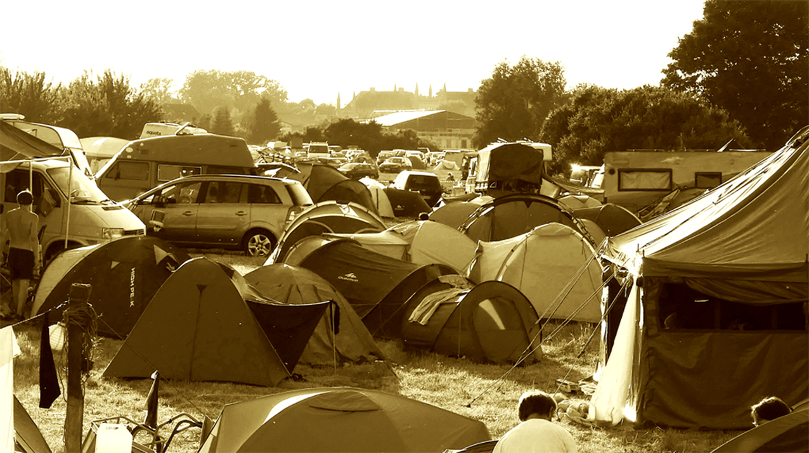
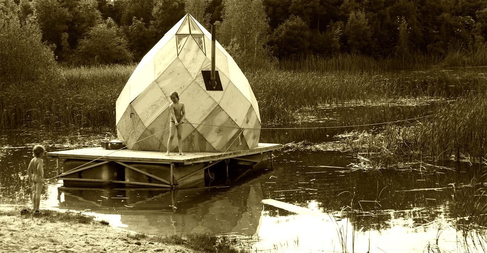

Kulturgut Freiland

Kulturgut Freiland
Auch zur 8. Runde des Freiland Sommerfestes in der Kieskuhle Broock, dem Kulturgut Freiland, waren wieder die Einwohner unserer umliegenden Dörfer gern gesehene Gäste. Denn ohne deren Toleranz gegen das außergewöhnliche Treiben in ihrem Umland ginge hier gar nichts. Das Kulturgut Freiland war vom 8. bis 10. Juni ein Raum, der Alternativen zum durchgetakteten, optimierten Leben in der Postmoderne aufzeigen, entwickeln und gestalten sollte. Außerhalb neoliberaler Isolierung kann sich im Tun eine Gemeinschaft bilden, im furchtlosen Miteinander. Das knapp 2 Wochen später rund um die Sommersonnenwende im schönen Kulturgut Freiland stattgefundene KiezBurn ging in seinen Ansprüchen sogar noch weiter: „Es wird keine Geldzirkulation im Kiez Burn geben, und keine Geschäfte oder Stände, um irgendetwas zu kaufen, einschließlich Essen. Plane angemessen, bevor du vor Ort ankommst. Hinterlasse keine Spuren. Was immer du in Kiez Burn bringst, du bist dafür verantwortlich, es bei deiner Abreise zu entfernen.“ Das nachhaltige Veranstaltungsgelände gibt es also schon.Tollensetaler Stimme 2018-07/S. 5
